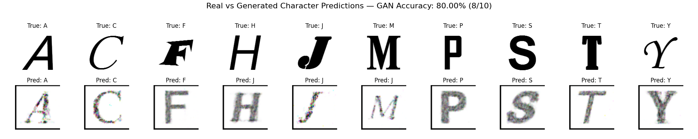

ThoughtViz Report Showcase
1. Original EEG Signals
A
C
2. Original Spectrograms
A
C
3. Channel-Masked Spectrograms
A
4. Channel GAN Outputs

Real vs Generated | Accuracy: 80.00%
Confusion Matrix
Training Losses
5. Time-Masked Spectrogram Verification
Original Sample
Masked Sample
Mask Highlight
6. Time GAN Outputs
Real vs Generated | Accuracy: 90.00%
Confusion Matrix
Training Losses